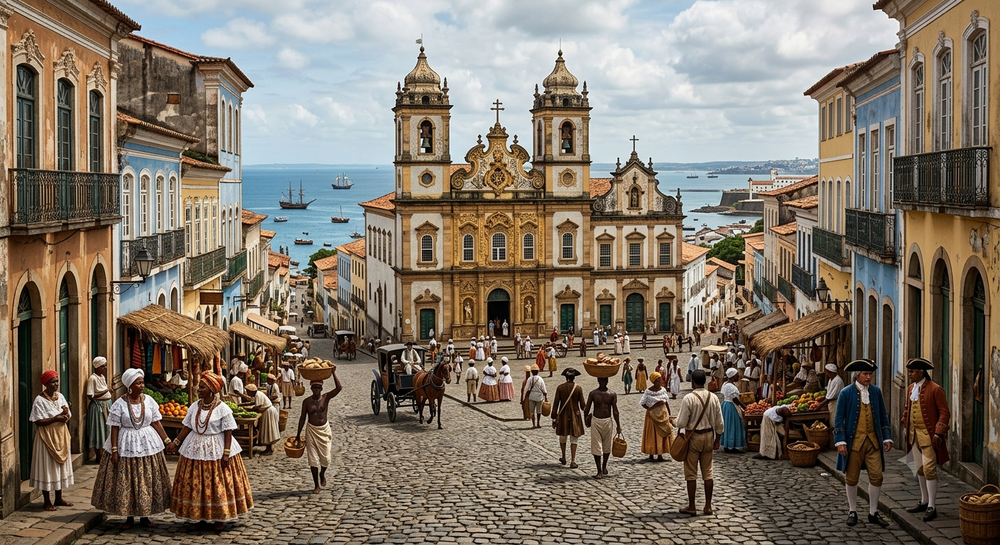

A Lírica Satírica
Gregório de Matos utilizava seus poemas para denunciar os problemas da sociedade baiana do século XVII. Ele criticava governantes corruptos, falsos nobres,novos ricos, membros da Igreja, comerciantes gananciosos e pessoas que utilizavam o poder para benefício próprio.

🟥 Corrupção
Criticava políticos corruptos.
🟨 Hipocrisia
Denunciava pessoas que fingiam ser virtuosas.
🟦 Desigualdade
Mostrava como os ricos eram privilegiados.
Curiosidade: "O apelido Boca do Inferno surgiu porque Gregório de Matos fazia críticas tão fortes que incomodava praticamente toda a sociedade."
Análise do poema
Triste Bahia
"Triste Bahia! Ó quão dessemelhante
Estás e estou do nosso antigo estado!"
Explicação: O poeta demonstra tristeza porque percebe que a Bahia havia perdido suas antigas qualidades. O contraste entre passado e presente representa uma importante característica do Barroco: a oposição entre ideias.